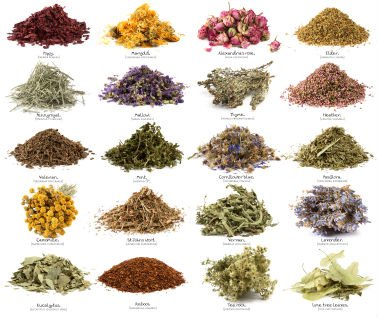

Ayurveda: Beyond Herbs
Herbalism or herbology is the sole use or study of utilizing plants and their power to restore or help maintain optimal health, however
herbal medecine is deeply rooted in varying alternative cultural medicines, but most notably in Hindu. This form of medicine is referenced as Ayurveda,
which literally means knowledge (veda) of life (ayu). There are three overarching constituents that rule the human body that are known as
kapha (phlegm), pitha (water) and vaata (air).

For lasting health, Sodhi recommends following these basic principles:
Sleep from 10 p.m. until 6 a.m., in tune with the earth's natural rhythms.
Eat food that is locally in season, as it provides nutrients that are essential during each time of year.
Don't drink water with meals, as it dilutes stomach acids that are essential for good digestion.
Don't eat fruit or sugary foods with meals, as sugar interferes with digestion.
When eating, avoid distractions such as watching television or using electronic devices.
Share meals with people whose company you enjoy.
Walk regularly, as walking is the most therapeutic form of exercise throughout life.